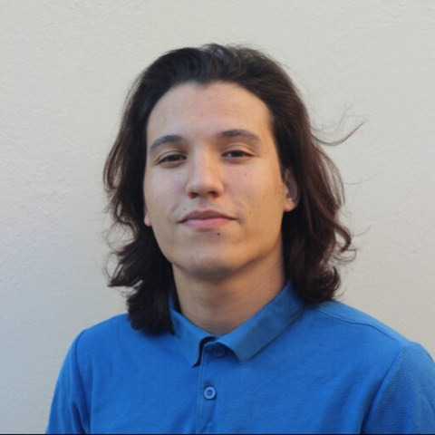

Assistant Professor in Robotics
Hamza Chakraa
U2IS, ENSTA, Institut Polytechnique de Paris
828 boulevard des Maréchaux, 91120 Palaiseau, France
- Multi-Robot Task Allocation
- Multi-UAV Guidance
- Multi-Agent RL
- Aerial Robotics
- Field Experiments
I am an Assistant Professor at ENSTA, Institut Polytechnique de Paris, in the U2IS lab. I work on coordination and decision-making for teams of aerial robots: how a fleet of drones should split up work, move, and share what it sees when communication is limited and the environment keeps changing. My research spans multi-robot task allocation, decentralized guidance and multi-agent reinforcement learning, and I care about taking these methods out of simulation and onto real drones in the field.
Before ENSTA, I was a postdoctoral researcher at ENAC (Toulouse) in the SysDyn team, working with Murat Bronz on the ANR FireFlies project on multi-UAV wildfire monitoring with LAAS-CNRS. I received my PhD from Université Le Havre Normandie (GREAH) in December 2024, with the European label, and was a visiting researcher at the University of Cagliari during my PhD.
I make teams of drones work together: on paper, in simulation, and outdoors.
Openings. I am looking for motivated M2 interns and PhD candidates in multi-agent reinforcement learning and multi-UAV coordination. Email me your CV and a short note on what you'd like to work on.
News
Invited talk “Coordinating UAV Teams” at the U2IS SyRRoMinaire, ENSTA (18 December), open to ONERA and AMIAD.
Co-organizing ECMAS, the workshop on Emergent Communication in Multi-Agent Systems at AAMAS 2027.
Our paper on UAV task allocation with hardware-in-the-loop and field validation is published in IEEE Robotics and Automation Practice [J4].
Joined ENSTA, Institut Polytechnique de Paris (U2IS) as Assistant Professor.
Presented decentralized PSO guidance for wildfire monitoring at IMAV 2026, Strasbourg [C5].
Smoke plume observation with drone swarms at ICUAS 2026, Corfu [C4].
Selected publications
All publications →Research interests
- Multi-robot task allocation & routing
- Decentralized and consensus-based coordination
- Swarm guidance (PSO-based)
- Multi-agent reinforcement learning (MAPPO, HAPPO)
- Spatio-temporal prediction for guidance (ConvLSTM)
- Hardware-in-the-loop and field validation
Application areas
- Wildfire and smoke plume monitoring
- Search & rescue and exploration
- Industrial inspection of high-risk sites
- Counter-UAS and swarm interception
Students
- Béatrice Garcia CegarraPhD student, ENSTA / AMIAD — decentralized multi-UAV exploration
- ErwanPhD student (co-supervised) — fixed-wing drone guidance
Collaborators
- Murat BronzENAC, Toulouse
- Carla Seatzu, Mauro Franceschelli, Diego DeplanoUniversity of Cagliari
- Dimitri LefebvreUniversité Le Havre Normandie
- Imane ArguiCESI Rouen
Teaching
- 5RO12 — Navigation pour les systèmes autonomesENSTA · localization, scan matching (ICP), mapping, EKF-SLAM
- CSC_5IA05 — Apprentissage pour la robotiqueENSTA / IP Paris · reinforcement learning part